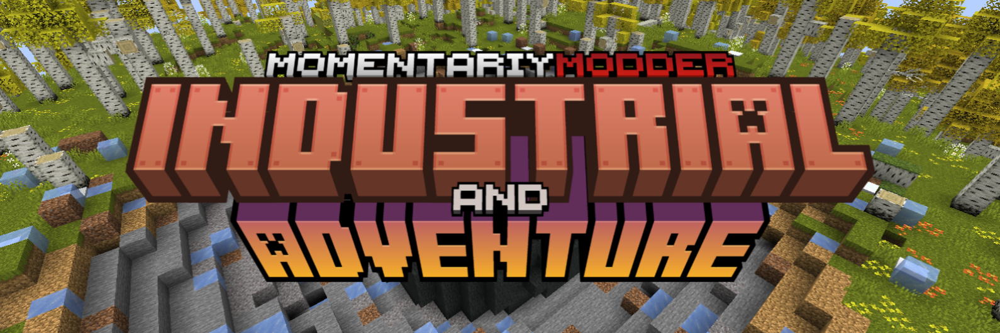

<!--
MomentariyModder Website 5.0 by MomentariyModder
The source code is available on GitHub!
-->

<!DOCTYPE html>
<html lang="en">
<head>
  <link rel="icon" href="../img/favicon.png">
  <title>Industrial and Adventure | Project | MomentariyModder</title>
  <meta name="viewport" content="width=device-width, initial-scale=1, maximum-scale=1" />
  <meta name="title" content="Industrial and Adventure | Project | MomentariyModder">
  <meta name="description" content="Hi, this is the official website of MomentariyModder!">
  <meta name="keywords" content="Minecraft, Mods, MomentariyModder">
  <meta name="theme-color" content="#4bb4f1">


  <script src="https://code.jquery.com/jquery-3.3.1.min.js"></script>
  <script src="https://cdn.jsdelivr.net/npm/handlebars@latest/dist/handlebars.js"></script>
  <script src="https://mcapi.us/scripts/minecraft.min.js"></script>
  <script src="../js/main.js"></script>
  <script src="../config.js"></script>
  <script src="../js/lightbox.min.js"></script>
 
  <script>tosAgreed = true</script>
 
  <link rel="stylesheet" href="https://cdnjs.cloudflare.com/ajax/libs/font-awesome/6.4.0/css/all.min.css"/>
  <link rel="stylesheet" href="../css/style.css">
  <link rel="stylesheet" href="../config.css">
  <link href="css/lightbox.css" rel="stylesheet" media="all">

</head>


<body>

  <div id="target"></div>

  <script id="template" type="text/x-handlebars-template">

  <header>
    <div class="hero" id="hero">
      <a href="#!"><h1 style="padding-top: 3%;"></h1></a>
    <p> </p>
    <div class="news-card" align="center">
	  <a href="../" class="lang btn" key="about"><i class="fa-solid fa-house"></i> Home</a>
	  <a href="../projects" class="btn"><i class="fa-solid fa-list-ul"></i> <f class="lang" key="projects">Projects</f></a>
	  <a href="#links" class="btn"><i class="fa-solid fa-share"></i> Links</a>
    </div>
	<p> </p>
	</div>
  </header>
  
  <section class="dark" id="projects">
	<h1><i class="fa-solid fa-list-ul"></i> Project</h1>
	<div id="news">
    <div class="news-card">
      <p align="center" style="color:#fff">
	    <a class="lang" key="modpack">Modpack</a>
	    <strong></strong>
	    
	  </p>
	  <p align="center" style="color:#fff">
		
      </p>
	  <p align="center" style="color:#fff">
		
      </p>
	  <p align="center" style="color:#fff">
	    
	  </p>
    </div>
	<p> </p>
	<div class="news-card">	
      <p>Revival of the old modpack! But on a new version and with a bunch of new mods! Explore the world with the new generation, do winemaking, create your own plant farms, visit a bunch of worlds, demolish all the dungeons that will meet you on the way, well, and deal with the industrialism itself, build a factory from a bunch of mechanisms that will be both on energy and on steam, create a ME-network and make autocrafts to it. And that's not all you can do in this modpack, but it's all up to you. I wish you good luck in going through this modpack!</p>
    </div>
	<p> </p>
	<div class="news-card">	
	  <p align="center" style="color:#fff">
	  <strong>Mods</strong>
      <ul>
      <li><a href="https://legacy.curseforge.com/minecraft/mc-mods/travelers-titles">Traveler's Titles (Forge) (by YUNGNICKYOUNG)</a></li>
      <li><a href="https://legacy.curseforge.com/minecraft/mc-mods/biomes-o-plenty">Biomes O' Plenty (by Forstride)</a></li>
      <li><a href="https://legacy.curseforge.com/minecraft/mc-mods/farmers-delight">Farmer's Delight (by vectorwing)</a></li>
      <li><a href="https://legacy.curseforge.com/minecraft/mc-mods/minecolonies">MineColonies (by Raycoms)</a></li>
      <li><a href="https://legacy.curseforge.com/minecraft/mc-mods/deep-resonance">Deep Resonance (by McJty)</a></li>
      <li><a href="https://legacy.curseforge.com/minecraft/mc-mods/dragon-mounts-legacy">Dragon Mounts: Legacy (by Kay9Unit)</a></li>
      <li><a href="https://legacy.curseforge.com/minecraft/mc-mods/lootr">Lootr (Forge) (by Noobanidus)</a></li>
      <li><a href="https://legacy.curseforge.com/minecraft/mc-mods/lets-do-bakery">[Let's Do] Bakery (by satisfy)</a></li>
      <li><a href="https://legacy.curseforge.com/minecraft/mc-mods/treasure2">Treasure2 (by gottsch)</a></li>
      <li><a href="https://legacy.curseforge.com/minecraft/mc-mods/library-ferret-forge">Library Ferret - Forge (by jtl_elisa)</a></li>
      <li><a href="https://legacy.curseforge.com/minecraft/mc-mods/structurize">Structurize (by Raycoms)</a></li>
      <li><a href="https://legacy.curseforge.com/minecraft/mc-mods/jade">Jade 🔍 (by Snownee)</a></li>
      <li><a href="https://legacy.curseforge.com/minecraft/mc-mods/welcome-to-meadow">[Let's Do] Meadow (by satisfy)</a></li>
      <li><a href="https://legacy.curseforge.com/minecraft/mc-mods/mighty-mail">Mighty Mail (Forge) (by MrCrayfish)</a></li>
      <li><a href="https://legacy.curseforge.com/minecraft/mc-mods/patchouli">Patchouli (by Vazkii)</a></li>
      <li><a href="https://legacy.curseforge.com/minecraft/mc-mods/trash-cans">Trash Cans (by SuperMartijn642)</a></li>
      <li><a href="https://legacy.curseforge.com/minecraft/mc-mods/supermartijn642s-config-lib">SuperMartijn642's Config Lib (by SuperMartijn642)</a></li>
      <li><a href="https://legacy.curseforge.com/minecraft/mc-mods/item-borders">Item Borders [Forge] (by Grend_G)</a></li>
      <li><a href="https://legacy.curseforge.com/minecraft/mc-mods/ad-astra">Ad Astra (by AlexNijjar)</a></li>
      <li><a href="https://legacy.curseforge.com/minecraft/mc-mods/alchemistry">Alchemistry (by Dark_Arcana)</a></li>
      <li><a href="https://legacy.curseforge.com/minecraft/mc-mods/regions-unexplored">Regions Unexplored (forge/fabric) (by UHQ_GAMES)</a></li>
      <li><a href="https://legacy.curseforge.com/minecraft/mc-mods/immersive-armors">Immersive Armors [Fabric/Forge] (by Conczin)</a></li>
      <li><a href="https://legacy.curseforge.com/minecraft/mc-mods/placebo">Placebo (by Shadows_of_Fire)</a></li>
      <li><a href="https://legacy.curseforge.com/minecraft/mc-mods/tiered-forge">Tiered (Forge) (by Stereowalker)</a></li>
      <li><a href="https://legacy.curseforge.com/minecraft/mc-mods/sophisticated-core">Sophisticated Core (by P3pp3rF1y)</a></li>
      <li><a href="https://legacy.curseforge.com/minecraft/mc-mods/friends-and-foes-forge">Friends&Foes (Forge) (Copper Golem, Glare, Moobloom, Iceologer, Barnacle, Wildfire, Illusioner, Rascal and Tuff Golem) (by faboslav)</a></li>
      <li><a href="https://legacy.curseforge.com/minecraft/mc-mods/mmmmmmmmmmmm">MmmMmmMmmMmm (Target Dummy) (by MehVahdJukaar)</a></li>
      <li><a href="https://legacy.curseforge.com/minecraft/mc-mods/waystones">Waystones (by BlayTheNinth)</a></li>
      <li><a href="https://legacy.curseforge.com/minecraft/mc-mods/framework">Framework (by MrCrayfish)</a></li>
      <li><a href="https://legacy.curseforge.com/minecraft/mc-mods/itemphysic">ItemPhysic Full (by CreativeMD)</a></li>
      <li><a href="https://legacy.curseforge.com/minecraft/mc-mods/twilights-flavors-delight">Twilight's Flavors & Delight (by lcy0x1)</a></li>
      <li><a href="https://legacy.curseforge.com/minecraft/mc-mods/dynamic-crosshair">Dynamic Crosshair (by Crendgrim)</a></li>
      <li><a href="https://legacy.curseforge.com/minecraft/mc-mods/alexs-mobs">Alex's Mobs (by sbom_xela)</a></li>
      <li><a href="https://legacy.curseforge.com/minecraft/mc-mods/yungs-api">YUNG's API (Forge) (by YUNGNICKYOUNG)</a></li>
      <li><a href="https://legacy.curseforge.com/minecraft/mc-mods/rubidium-extra">Rubidium Extra (by dimadencep)</a></li>
      <li><a href="https://legacy.curseforge.com/minecraft/mc-mods/rftools-dimensions">RFTools Dimensions (by McJty)</a></li>
      <li><a href="https://legacy.curseforge.com/minecraft/mc-mods/jadecolonies">JadeColonies (by uecasm)</a></li>
      <li><a href="https://legacy.curseforge.com/minecraft/mc-mods/sleep-tight">Sleep Tight (by plantspookable)</a></li>
      <li><a href="https://legacy.curseforge.com/minecraft/mc-mods/ferritecore">FerriteCore (Forge) (by malte0811)</a></li>
      <li><a href="https://legacy.curseforge.com/minecraft/mc-mods/ae2-things-forge">AE2 Things [Forge] (by thetechnici4n)</a></li>
      <li><a href="https://legacy.curseforge.com/minecraft/mc-mods/prometheus">Prometheus (by terrariumearth)</a></li>
      <li><a href="https://legacy.curseforge.com/minecraft/mc-mods/extreme-reactors">Extreme Reactors (by ZeroNoRyouki)</a></li>
      <li><a href="https://legacy.curseforge.com/minecraft/mc-mods/additional-enchanted-miner">Additional Enchanted Miner (by Kotori316)</a></li>
      <li><a href="https://legacy.curseforge.com/minecraft/mc-mods/rftools-storage">RFTools Storage (by McJty)</a></li>
      <li><a href="https://legacy.curseforge.com/minecraft/mc-mods/athena">Athena (by CodexAdrian)</a></li>
      <li><a href="https://legacy.curseforge.com/minecraft/mc-mods/yungs-better-dungeons">YUNG's Better Dungeons (Forge) (by YUNGNICKYOUNG)</a></li>
      <li><a href="https://legacy.curseforge.com/minecraft/mc-mods/yungs-better-ocean-monuments">YUNG's Better Ocean Monuments (Forge) (by YUNGNICKYOUNG)</a></li>
      <li><a href="https://legacy.curseforge.com/minecraft/mc-mods/simple-farming">Simple Farming (by enemeez1)</a></li>
      <li><a href="https://legacy.curseforge.com/minecraft/mc-mods/water-erosion">Water Erosion (by 13rac1)</a></li>
      <li><a href="https://legacy.curseforge.com/minecraft/mc-mods/ai-improvements">AI Improvements (by QueenOfMissiles)</a></li>
      <li><a href="https://legacy.curseforge.com/minecraft/mc-mods/iceberg">Iceberg [Forge] (by Grend_G)</a></li>
      <li><a href="https://legacy.curseforge.com/minecraft/mc-mods/better-combat-by-daedelus">Better Combat [Fabric & Forge] (by daedelus_dev)</a></li>
      <li><a href="https://legacy.curseforge.com/minecraft/mc-mods/cupboard">Cupboard (by someaddon)</a></li>
      <li><a href="https://legacy.curseforge.com/minecraft/mc-mods/advanced-mining-dimension">Advanced Mining Dimension (by henkelmax)</a></li>
      <li><a href="https://legacy.curseforge.com/minecraft/mc-mods/pots-and-mimics-rpg">Realm RPG: Pots & Mimics (by nocubeyt)</a></li>
      <li><a href="https://legacy.curseforge.com/minecraft/mc-mods/star-wars-planets-ad-astra">Star Wars Planets Ad Astra! [Forge/Fabric] (by TathanDev)</a></li>
      <li><a href="https://legacy.curseforge.com/minecraft/mc-mods/avaritia-reforged">Avaritia:Reforged (by cnlimiter)</a></li>
      <li><a href="https://legacy.curseforge.com/minecraft/mc-mods/rubidium">Rubidium (by Asek3)</a></li>
      <li><a href="https://legacy.curseforge.com/minecraft/mc-mods/multi-piston">Multi-Piston (by Raycoms)</a></li>
      <li><a href="https://legacy.curseforge.com/minecraft/mc-mods/journeymap">JourneyMap (by techbrew)</a></li>
      <li><a href="https://legacy.curseforge.com/minecraft/mc-mods/shulker">Shulker+ (by Iskall85Team)</a></li>
      <li><a href="https://legacy.curseforge.com/minecraft/mc-mods/stylecolonies">Stylecolonies (by Raycoms)</a></li>
      <li><a href="https://legacy.curseforge.com/minecraft/mc-mods/immersive-paintings">Immersive Paintings [Fabric/Forge] (by Conczin)</a></li>
      <li><a href="https://legacy.curseforge.com/minecraft/mc-mods/do-api">[Let's Do] API  (by Cristelknight)</a></li>
      <li><a href="https://legacy.curseforge.com/minecraft/mc-mods/alchemylib">AlchemyLib (by Dark_Arcana)</a></li>
      <li><a href="https://legacy.curseforge.com/minecraft/mc-mods/cadmus">Cadmus (by terrariumearth)</a></li>
      <li><a href="https://legacy.curseforge.com/minecraft/mc-mods/netherportalfix">NetherPortalFix (by BlayTheNinth)</a></li>
      <li><a href="https://legacy.curseforge.com/minecraft/mc-mods/serene-seasons">Serene Seasons (by TheAdubbz)</a></li>
      <li><a href="https://legacy.curseforge.com/minecraft/mc-mods/blockui">BlockUI (by Raycoms)</a></li>
      <li><a href="https://legacy.curseforge.com/minecraft/mc-mods/hammer-lib">HammerLib (by Zeith)</a></li>
      <li><a href="https://legacy.curseforge.com/minecraft/mc-mods/natures-compass">Nature's Compass (by Chaosyr)</a></li>
      <li><a href="https://legacy.curseforge.com/minecraft/mc-mods/appleskin">AppleSkin (by squeek502)</a></li>
      <li><a href="https://legacy.curseforge.com/minecraft/mc-mods/tropicraft">Tropicraft (by Cojomax99)</a></li>
      <li><a href="https://legacy.curseforge.com/minecraft/mc-mods/titanium">Titanium (by Buuz135)</a></li>
      <li><a href="https://legacy.curseforge.com/minecraft/mc-mods/storage-racks">Storage Racks (by Raycoms)</a></li>
      <li><a href="https://legacy.curseforge.com/minecraft/mc-mods/mcjtylib">McJtyLib (by McJty)</a></li>
      <li><a href="https://legacy.curseforge.com/minecraft/mc-mods/catalogue">Catalogue (by MrCrayfish)</a></li>
      <li><a href="https://legacy.curseforge.com/minecraft/mc-mods/yungs-better-desert-temples">YUNG's Better Desert Temples (Forge) (by YUNGNICKYOUNG)</a></li>
      <li><a href="https://legacy.curseforge.com/minecraft/mc-mods/more-mob-variants">More Mob Variants (by nyuppo)</a></li>
      <li><a href="https://legacy.curseforge.com/minecraft/mc-mods/ad-astra-giselle-addon">Ad Astra: Giselle Addon (by 지젤쟝다)</a></li>
      <li><a href="https://legacy.curseforge.com/minecraft/mc-mods/playeranimator">playerAnimator (by KosmX)</a></li>
      <li><a href="https://legacy.curseforge.com/minecraft/mc-mods/pneumaticcraft-repressurized">PneumaticCraft: Repressurized (by desht_08)</a></li>
      <li><a href="https://legacy.curseforge.com/minecraft/mc-mods/towers-of-the-wild-modded">Towers of the Wild Modded (by celsiusqc)</a></li>
      <li><a href="https://legacy.curseforge.com/minecraft/mc-mods/enchantment-descriptions">Enchantment Descriptions (by DarkhaxDev)</a></li>
      <li><a href="https://legacy.curseforge.com/minecraft/mc-mods/selene">Moonlight Lib (by MehVahdJukaar)</a></li>
      <li><a href="https://legacy.curseforge.com/minecraft/mc-mods/sophisticated-backpacks">Sophisticated Backpacks (by P3pp3rF1y)</a></li>
      <li><a href="https://legacy.curseforge.com/minecraft/mc-mods/shetiphiancore">ShetiPhianCore (by ShetiPhian)</a></li>
      <li><a href="https://legacy.curseforge.com/minecraft/mc-mods/wabi-sabi-structures-forge">Wabi-Sabi Structures (Forge) (by shadow_of_wights)</a></li>
      <li><a href="https://legacy.curseforge.com/minecraft/mc-mods/applied-cooking">Applied Cooking (by ItsSebastrn)</a></li>
      <li><a href="https://legacy.curseforge.com/minecraft/mc-mods/terrablender">TerraBlender (Forge) (by TheAdubbz)</a></li>
      <li><a href="https://legacy.curseforge.com/minecraft/mc-mods/pipez">Pipez (by henkelmax)</a></li>
      <li><a href="https://legacy.curseforge.com/minecraft/mc-mods/ironchests">Iron Chests: Restocked (by ThatGravyBoat)</a></li>
      <li><a href="https://legacy.curseforge.com/minecraft/mc-mods/sebastrnlib">SebastrnLib (by ItsSebastrn)</a></li>
      <li><a href="https://legacy.curseforge.com/minecraft/mc-mods/corail-woodcutter">Corail Woodcutter (by Corail_31)</a></li>
      <li><a href="https://legacy.curseforge.com/minecraft/mc-mods/architectury-api">Architectury API (Fabric/Forge) (by shedaniel)</a></li>
      <li><a href="https://legacy.curseforge.com/minecraft/mc-mods/jei">Just Enough Items (JEI) (by mezz)</a></li>
      <li><a href="https://legacy.curseforge.com/minecraft/mc-mods/aquaculture">Aquaculture 2 (by Shadow)</a></li>
      <li><a href="https://legacy.curseforge.com/minecraft/mc-mods/zerocore">ZeroCore 2 (by ZeroNoRyouki)</a></li>
      <li><a href="https://legacy.curseforge.com/minecraft/mc-mods/cloth-config">Cloth Config API (Fabric/Forge) (by shedaniel)</a></li>
      <li><a href="https://legacy.curseforge.com/minecraft/mc-mods/vinery">[Let's Do] Vinery (by satisfy)</a></li>
      <li><a href="https://legacy.curseforge.com/minecraft/mc-mods/rightclickharvest">RightClickHarvest (by jamalam360)</a></li>
      <li><a href="https://legacy.curseforge.com/minecraft/mc-mods/immersive-aircraft">Immersive Aircraft [Fabric/Forge] (by Conczin)</a></li>
      <li><a href="https://legacy.curseforge.com/minecraft/mc-mods/nethers-delight">Nether's Delight (by lumpazl)</a></li>
      <li><a href="https://legacy.curseforge.com/minecraft/mc-mods/geophilic">Geophilic – Biome Overhauls (by bebebea_loste)</a></li>
      <li><a href="https://legacy.curseforge.com/minecraft/mc-mods/solar-flux-reborn">Solar Flux Reborn (by Zeith)</a></li>
      <li><a href="https://legacy.curseforge.com/minecraft/mc-mods/survive">Survive (by Stereowalker)</a></li>
      <li><a href="https://legacy.curseforge.com/minecraft/mc-mods/supermartijn642s-core-lib">SuperMartijn642's Core Lib (by SuperMartijn642)</a></li>
      <li><a href="https://legacy.curseforge.com/minecraft/mc-mods/enderchests">EnderChests (by ShetiPhian)</a></li>
      <li><a href="https://legacy.curseforge.com/minecraft/mc-mods/rats">Rats (by sbom_xela)</a></li>
      <li><a href="https://legacy.curseforge.com/minecraft/mc-mods/botarium">Botarium (by CodexAdrian)</a></li>
      <li><a href="https://legacy.curseforge.com/minecraft/mc-mods/incendium">Incendium (by Starmute)</a></li>
      <li><a href="https://legacy.curseforge.com/minecraft/mc-mods/chunk-loaders">Chunk Loaders (by SuperMartijn642)</a></li>
      <li><a href="https://legacy.curseforge.com/minecraft/mc-mods/prism-lib">Prism [Forge] (by Grend_G)</a></li>
      <li><a href="https://legacy.curseforge.com/minecraft/mc-mods/dynamiclights-reforged">Magnesium/Rubidium Dynamic Lights (by Anthxny)</a></li>
      <li><a href="https://legacy.curseforge.com/minecraft/mc-mods/cristel-lib">Cristel Lib (by Cristelknight)</a></li>
      <li><a href="https://legacy.curseforge.com/minecraft/mc-mods/ambientsounds">AmbientSounds 5 (by CreativeMD)</a></li>
      <li><a href="https://legacy.curseforge.com/minecraft/mc-mods/enhancedvisuals">EnhancedVisuals (by CreativeMD)</a></li>
      <li><a href="https://legacy.curseforge.com/minecraft/mc-mods/goblin-traders">Goblin Traders (by MrCrayfish)</a></li>
      <li><a href="https://legacy.curseforge.com/minecraft/mc-mods/storage-drawers">Storage Drawers (by Texelsaur)</a></li>
      <li><a href="https://legacy.curseforge.com/minecraft/mc-mods/creativecore">CreativeCore (by CreativeMD)</a></li>
      <li><a href="https://legacy.curseforge.com/minecraft/mc-mods/rftools-base">RFTools Base (by McJty)</a></li>
      <li><a href="https://legacy.curseforge.com/minecraft/mc-mods/citadel">Citadel (by sbom_xela)</a></li>
      <li><a href="https://legacy.curseforge.com/minecraft/mc-mods/yungs-better-nether-fortresses">YUNG's Better Nether Fortresses (Forge) (by YUNGNICKYOUNG)</a></li>
      <li><a href="https://legacy.curseforge.com/minecraft/mc-mods/packmenu">PackMenu (by Shadows_of_Fire)</a></li>
      <li><a href="https://legacy.curseforge.com/minecraft/mc-mods/packagedauto">PackagedAuto (by TheLMiffy1111)</a></li>
      <li><a href="https://legacy.curseforge.com/minecraft/mc-mods/resourceful-lib">Resourceful Lib (by ThatGravyBoat)</a></li>
      <li><a href="https://legacy.curseforge.com/minecraft/mc-mods/bookshelf">Bookshelf (by DarkhaxDev)</a></li>
      <li><a href="https://legacy.curseforge.com/minecraft/mc-mods/sky-villages-forge">Sky Villages [Forge] (by y4z0n)</a></li>
      <li><a href="https://legacy.curseforge.com/minecraft/mc-mods/the-twilight-forest">The Twilight Forest (by Benimatic)</a></li>
      <li><a href="https://legacy.curseforge.com/minecraft/mc-mods/treechop">HT's TreeChop (by hammertater)</a></li>
      <li><a href="https://legacy.curseforge.com/minecraft/mc-mods/lets-do-candlelight">[Let's Do] Candlelight (by satisfy)</a></li>
      <li><a href="https://legacy.curseforge.com/minecraft/mc-mods/friends-and-foes-beekeeper-hut-forge">Friends&Foes - Beekeeper Hut (Forge) (by faboslav)</a></li>
      <li><a href="https://legacy.curseforge.com/minecraft/mc-mods/rftools-power">RFTools Power (by McJty)</a></li>
      <li><a href="https://legacy.curseforge.com/minecraft/mc-mods/mega-cells">MEGA Cells (by ninety)</a></li>
      <li><a href="https://legacy.curseforge.com/minecraft/mc-mods/towns-and-towers">Towns and Towers (by Biban_Auriu)</a></li>
      <li><a href="https://legacy.curseforge.com/minecraft/mc-mods/corail-tombstone">Corail Tombstone (by Corail_31)</a></li>
      <li><a href="https://legacy.curseforge.com/minecraft/mc-mods/cuisine-delight">Cuisine Delight (by lcy0x1)</a></li>
      <li><a href="https://legacy.curseforge.com/minecraft/mc-mods/atomicstrykers-infernal-mobs">AtomicStryker's Infernal Mobs (by atomicstrykergrumpy)</a></li>
      <li><a href="https://legacy.curseforge.com/minecraft/mc-mods/flux-networks">Flux Networks (by sonar_sonic)</a></li>
      <li><a href="https://legacy.curseforge.com/minecraft/mc-mods/resourceful-config">Resourceful Config (by ThatGravyBoat)</a></li>
      <li><a href="https://legacy.curseforge.com/minecraft/mc-mods/yungs-better-witch-huts">YUNG's Better Witch Huts (Forge) (by YUNGNICKYOUNG)</a></li>
      <li><a href="https://legacy.curseforge.com/minecraft/mc-mods/kotlin-for-forge">Kotlin for Forge (by thedarkcolour)</a></li>
      <li><a href="https://legacy.curseforge.com/minecraft/mc-mods/rftools-control">RFTools Control (by McJty)</a></li>
      <li><a href="https://legacy.curseforge.com/minecraft/mc-mods/fps-reducer">FPS Reducer (by bre2el)</a></li>
      <li><a href="https://legacy.curseforge.com/minecraft/mc-mods/framedblocks">FramedBlocks (by XFactHD)</a></li>
      <li><a href="https://legacy.curseforge.com/minecraft/mc-mods/croptopia">Croptopia (by thethonk)</a></li>
      <li><a href="https://legacy.curseforge.com/minecraft/mc-mods/domum-ornamentum">Domum Ornamentum (by OrionOnline)</a></li>
      <li><a href="https://legacy.curseforge.com/minecraft/mc-mods/item-highlighter">Item Highlighter [Forge] (by Grend_G)</a></li>
      <li><a href="https://legacy.curseforge.com/minecraft/mc-mods/dynamic-crosshair-compat">Dynamic Crosshair Compat (by Crendgrim)</a></li>
      <li><a href="https://legacy.curseforge.com/minecraft/mc-mods/chemlib">ChemLib (by Dark_Arcana)</a></li>
      <li><a href="https://legacy.curseforge.com/minecraft/mc-mods/handcrafted">Handcrafted (by kekie6)</a></li>
      <li><a href="https://legacy.curseforge.com/minecraft/mc-mods/yungs-better-mineshafts-forge">YUNG's Better Mineshafts (Forge) (by YUNGNICKYOUNG)</a></li>
      <li><a href="https://legacy.curseforge.com/minecraft/mc-mods/gottschcore">GottschCore (by gottsch)</a></li>
      <li><a href="https://legacy.curseforge.com/minecraft/mc-mods/balm">Balm (Forge Edition) (by BlayTheNinth)</a></li>
      <li><a href="https://legacy.curseforge.com/minecraft/mc-mods/ender-io">Ender IO (by crazypants_mc_the_second)</a></li>
      <li><a href="https://legacy.curseforge.com/minecraft/mc-mods/applied-energistics-2">Applied Energistics 2 (by thetechnici4n)</a></li>
      <li><a href="https://legacy.curseforge.com/minecraft/mc-mods/better-village-forge">Better Villages - Forge (by jtl_elisa)</a></li>
      <li><a href="https://legacy.curseforge.com/minecraft/mc-mods/legendary-tooltips">Legendary Tooltips [Forge] (by Grend_G)</a></li>
      <li><a href="https://legacy.curseforge.com/minecraft/mc-mods/nullscape">Nullscape (by Starmute)</a></li>
      <li><a href="https://legacy.curseforge.com/minecraft/mc-mods/textrues-rubidium-options">TexTrue's Rubidium Options (by TexTrue)</a></li>
      <li><a href="https://legacy.curseforge.com/minecraft/mc-mods/merequester">ME Requester (by Relentless)</a></li>
      <li><a href="https://legacy.curseforge.com/minecraft/mc-mods/playerrevive">PlayerRevive (by CreativeMD)</a></li>
      <li><a href="https://legacy.curseforge.com/minecraft/mc-mods/cooking-for-blockheads">Cooking for Blockheads (by BlayTheNinth)</a></li>
      <li><a href="https://legacy.curseforge.com/minecraft/mc-mods/yungs-better-strongholds">YUNG's Better Strongholds (Forge) (by YUNGNICKYOUNG)</a></li>
      <li><a href="https://legacy.curseforge.com/minecraft/mc-mods/geckolib">GeckoLib (by Gecko)</a></li>
      <li><a href="https://legacy.curseforge.com/minecraft/mc-mods/guard-villagers">Guard Villagers (by almightytallestred)</a></li>
      <li><a href="https://legacy.curseforge.com/minecraft/mc-mods/industrial-foregoing">Industrial Foregoing (by Buuz135)</a></li>
      <li><a href="https://legacy.curseforge.com/minecraft/mc-mods/friends-and-foes-flowery-mooblooms-forge">Friends&Foes - Flowery Mooblooms (Forge) (by faboslav)</a></li>
      <li><a href="https://legacy.curseforge.com/minecraft/mc-mods/towntalk">TownTalk (by Raycoms)</a></li>
      <li><a href="https://legacy.curseforge.com/minecraft/mc-mods/chimes">Chimes (by BlewberryPie)</a></li>
      <li><a href="https://legacy.curseforge.com/minecraft/mc-mods/visual-workbench">Visual Workbench [Forge & Fabric] (by Fuzs)</a></li>
      <li><a href="https://legacy.curseforge.com/minecraft/mc-mods/wormhole-portals">Wormhole (Portals) (by SuperMartijn642)</a></li>
      <li><a href="https://legacy.curseforge.com/minecraft/mc-mods/ae-additions-extra-cells-2-fork">AE Additions - ExtraCells2 Fork (by MasterYodAT9G)</a></li>
      <li><a href="https://legacy.curseforge.com/minecraft/mc-mods/scalable-cats-force">Scalable Cat's Force (by Kotori316)</a></li>
      <li><a href="https://legacy.curseforge.com/minecraft/mc-mods/tesseract">Tesseract (by SuperMartijn642)</a></li>
      <li><a href="https://legacy.curseforge.com/minecraft/mc-mods/the-graveyard-forge">The Graveyard (FORGE) (by finallion_13)</a></li>
      <li><a href="https://legacy.curseforge.com/minecraft/mc-mods/chipped">Chipped (by terrariumearth)</a></li>
      <li><a href="https://legacy.curseforge.com/minecraft/mc-mods/endertanks">EnderTanks (by ShetiPhian)</a></li>
      <li><a href="https://legacy.curseforge.com/minecraft/mc-mods/cosmetic-armor-reworked">Cosmetic Armor Reworked (by LainMI)</a></li>
      <li><a href="https://legacy.curseforge.com/minecraft/mc-mods/better-fps-render-distance">Better Fps - Render Distance[Forge] (by someaddon)</a></li>
      <li><a href="https://legacy.curseforge.com/minecraft/mc-mods/repurposed-structures">Repurposed Structures (Forge) (by telepathicgrunt)</a></li>
      <li><a href="https://legacy.curseforge.com/minecraft/mc-mods/official-divinerpg">DivineRPG (Official) (by Nicusha)</a></li>
      <li><a href="https://legacy.curseforge.com/minecraft/mc-mods/spice-of-life-carrot-edition">Spice of Life: Carrot Edition (by lordcazsius)</a></li>
      <li><a href="https://legacy.curseforge.com/minecraft/mc-mods/ends-delight">End's Delight (by foggyhillside)</a></li>
      <li><a href="https://legacy.curseforge.com/minecraft/mc-mods/yungs-better-jungle-temples">YUNG's Better Jungle Temples (Forge) (by YUNGNICKYOUNG)</a></li>
      <li><a href="https://legacy.curseforge.com/minecraft/mc-mods/aeinfinitybooster">AEInfinityBooster (by hexeptiondev)</a></li>
      <li><a href="https://legacy.curseforge.com/minecraft/mc-mods/ex-pattern-provider">ExtendedAE (by GlodBlock)</a></li>
      <li><a href="https://legacy.curseforge.com/minecraft/mc-mods/puzzles-lib">Puzzles Lib [Forge & Fabric] (by Fuzs)</a></li>
      <li><a href="https://legacy.curseforge.com/minecraft/mc-mods/divinerpg-compatability">DivineRPG: Compatability (by Nicusha)</a></li>
      <li><a href="https://legacy.curseforge.com/minecraft/mc-mods/railcraft-reborn">Railcraft Reborn (by 3divad99)</a></li>
      <li><a href="https://legacy.curseforge.com/minecraft/mc-mods/unionlib">UnionLib (by Stereowalker)</a></li>
      <li><a href="https://legacy.curseforge.com/minecraft/mc-mods/realm-rpg-dragon-wyrms">Realm RPG: Dragon Wyrms (by nocubeyt)</a></li>
      <li><a href="https://legacy.curseforge.com/minecraft/mc-mods/mouse-tweaks">Mouse Tweaks (by YaLTeR)</a></li>
      </ul>
	  </p>
    </div>
	<p> </p>
	<div class="news-card">	
	  <p align="center" style="color:#fff">
	   <strong>Download</strong>
       <a href="https://www.curseforge.com/minecraft/modpacks/industrial-and-adventure"></a>
	  </p>
    </div>
    </div>
  </section>
  <section class="dark">
	<div class="news-card" align="center">
	<a href="../projects" class="btn2">◀ Back</a>
	</div>
  </section>
  
  <section class="light">
    <h1><i class="fa-solid fa-share"></i> Links</h1>
    <div id="links" align="center">
	  <a href="https://discord.com/invite/9XqgjRd"></a> 
	  <a href="https://twitter.com/momentariymoder"></a>	 
	  <a href="https://legacy.curseforge.com/members/momentariymodder"></a> 
	  <a href="https://modrinth.com/user/momentariymodder"></a> 
	  <a href="https://github.com/MomentariyModder"></a>
	  <a href="https://patreon.com/momentariymodder"></a>
	  <a href="https://boosty.to/momentariymodder"></a>
	  <a href="https://ko-fi.com/momentariymodder"></a>
	  <a href="https://www.buymeacoffee.com/momentariymodder"></a>
    </div>
  </section>
  
  
  <footer>
    <a>&copy; 2019-2024 {{server_name}}. All Rights Reserved.</br>{{server_name}} is not affiliated with or endorsed by Mojang Studios or Microsoft<br>{{server_ip}}</a>
	<a></a>
	
  </footer>
  </script>
  <script src="../js/license.js"></script>
  
</body>
</html>